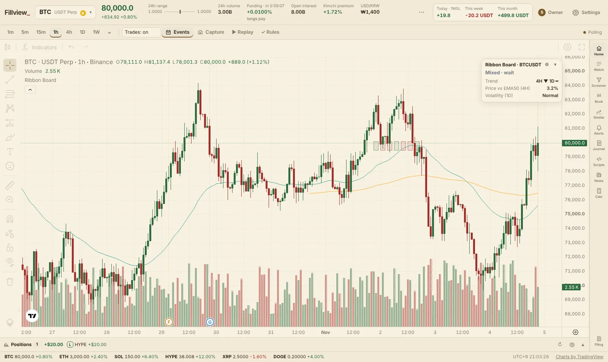
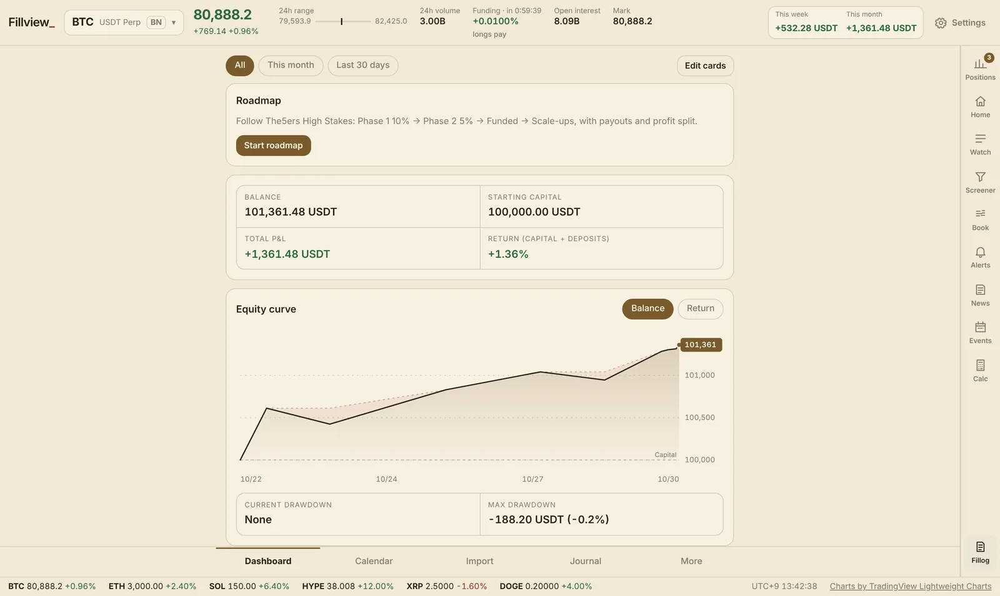
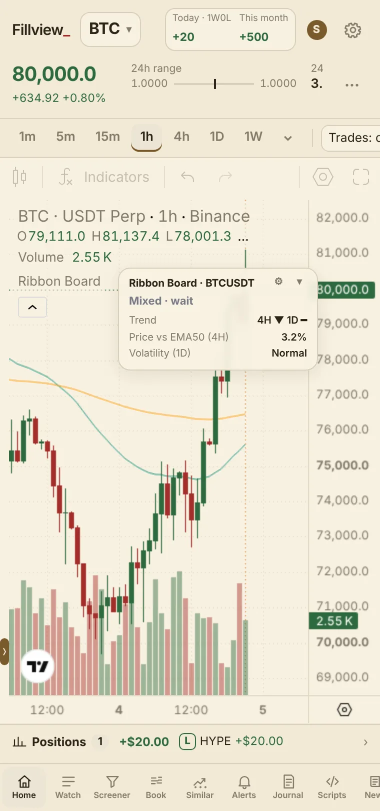
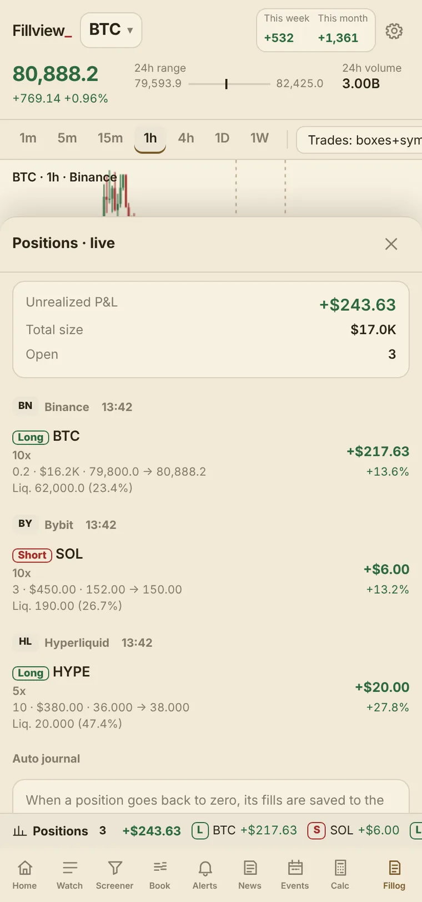

Services
Fillview has two products: the Fillview terminal and the Fillog trading journal. Both open right in the browser, with nothing to install and no sign-up.
Everything a trader checks, in one place
No more ten open tabs. The chart stays at the center and everything else slides in beside it.
Live positions
Open positions from Binance, Bybit, OKX, Bitget, Hyperliquid, Aster, Lighter and cTrader in one list and as lines on the chart. Connections are read-only; Fillview never places orders.
Automatic journal
When a position goes back to zero, its fills are grouped into one trade and saved to the journal (Fillog). Entries, adds and exits are drawn right on the chart.
Multi-venue screener
Today's gainers, volume, funding, open interest and long/short ratios combined across CEX and DEX venues.
Risk tools
P&L and average-price calculators, daily-loss and losing-streak (tilt) warnings, and a rules checklist before each entry.
Alerts and calendar
Price, funding, open-interest and near-liquidation alerts, plus FOMC, CPI and other key releases marked on the chart.
Replay and share cards
Replay past trades bar by bar to review them, and export results as clean image cards.
One screener for CEX and DEX
The trading day starts at UTC 00:00, and funding with different intervals is normalized to 8 hours so venues compare fairly.
- Top gainers today and over 7 days, CEX and DEX
- Top 20 by combined volume across venues
- Highest and lowest funding, and funding gaps between venues
- Combined open interest, share by venue, long/short ratios


Fillog: a journal built into the chart
Record trades automatically through exchange APIs, or upload them yourself from screenshots, AI-formatted text or MT5 report files.
- Equity curve, drawdown, win rate and profit factor
- Calendar, daily notes and rule checks
- Roadmap for prop-firm challenge phases
- Data stays on your device, with backup files
Made for your phone, too
Open it in the browser with nothing to install, or add it to your home screen and use it like an app. Foldable screens are supported.


Security and your data
Fillview is designed so it can't move your money.
Read-only connections
API keys with trading or withdrawal permission are refused where it can be checked. DEX accounts need only a wallet address.
Keys stay on your device
API keys are encrypted inside your browser and requests are signed on your device. Keys are never stored on a server.
Your records, your device
Journal entries and settings live in browser storage. Export a backup file whenever you like.
Pricing
Charts are free with no sign-up. Pro comes with a free 3-day trial when you sign in with Telegram.
- TradingView Advanced Charts · 100+ indicators
- Economic calendar on the chart
- P&L and average-price calculator
- Exchange connection and live positions
- Fillog journal with auto-recording
- Alerts, similar setups, screener, order book, news
- Your own Pine Script indicators, tables as cards
- Then $8.9/month in Telegram Stars (opening soon)
Supported venues and platforms
Positions and automatic journaling use read-only connections. There is no order execution.
Centralized exchanges
Binance · Bybit · OKX · Bitget
Decentralized exchanges
Hyperliquid · Aster · Lighter
FX and CFD platforms
cTrader (Open API, view-only sign-in) · MT5 report file import
Who it's for
Individual traders who trade futures across several exchanges, and traders working through prop-firm challenges.
Multi-exchange traders
See scattered positions and P&L on one screen.
Traders who review
Trades land in the journal automatically, so review takes less time.